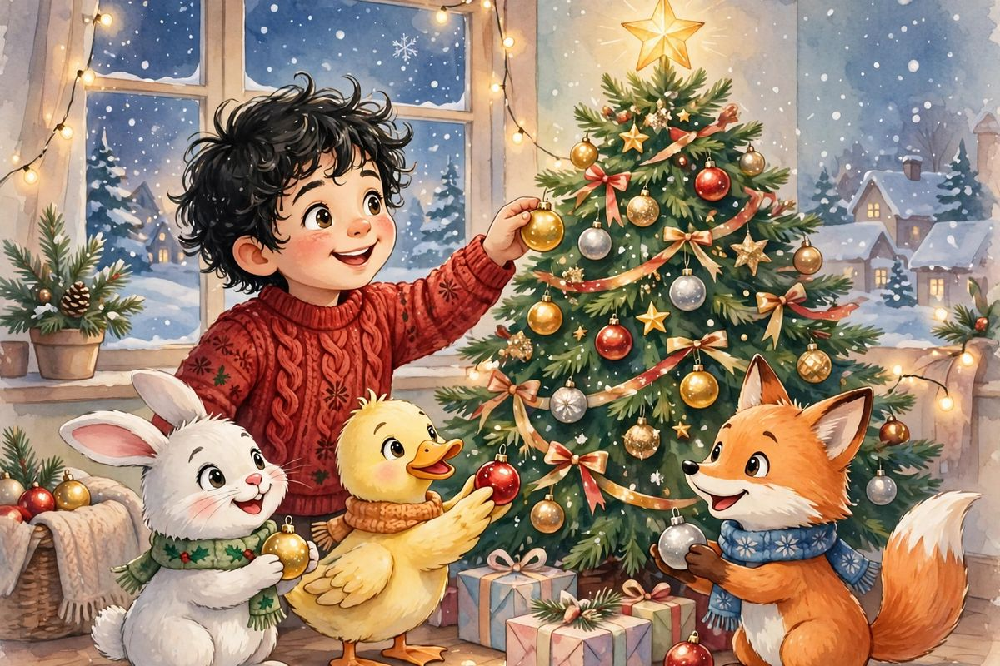

Adam prépare Noël
Une histoire d'Adam et ses amis, à lire, à écouter et à jouer ensemble.

🎧 Lecture audio interactive — français québécois
La lecture est racontée comme une vraie histoire : la voix change avec l'émotion — excitée le matin de Noël, douce au moment du dodo, et grave comme le père Noël ! À chaque page, une petite question invite votre enfant à répondre, à montrer et à répéter — on continue ensemble !
Joyeux Noël ! 🎄
Merci d'avoir lu cette histoire avec Adam et ses amis.
Découvrez aussi nos autres livres gratuits :
Bébé Adam : les couleurs
Bébé Adam : les animaux
Bébé Adam : bonne nuit
Bébé Adam : Noël
Toutes les histoires gratuites →
PDF sur Etsy • Livre broché sur Amazon.ca • lgmdesign35.com